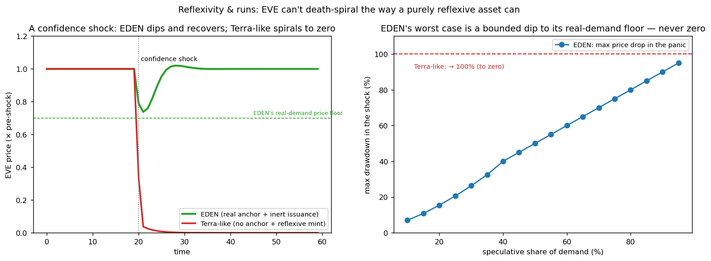

In plain language
Companion to RESULTS - Reflexivity & Runs. Companion added July 11, 2026 — the v1–v5-era runs predate the plain-language convention; written from the committed RESULTS as it stands today (including any verification-pass corrections already applied in that file), with no reinterpretation.
The question
Every new currency meets the same critique: "it's a reflexive asset — in a panic it death-spirals to zero, like Terra." This run answers with a simulation instead of an argument: hit a Terra-like design and an EDEN-like design with the identical confidence shock and momentum-driven selling, and see what the structure does.
Read the correction first
A July 2026 verification pass corrected this file's original claim, and the correction governs. The original table and prose said the EDEN-like design "recovers" even at high speculative shares; the committed data says otherwise, and the data is right: recovery within the horizon holds at speculative shares up to ~70% — at 90–95%, the ~90% drawdown does not recover within the simulated window. And "never zero" is a property of the assumed price-insensitive real-demand bid — an assumption the pilot must validate, not a simulation discovery. If EVE's holder base becomes dominantly speculative, this model predicts Terra-adjacent outcomes. Keeping real (machine-pay and floor) demand dominant is a design requirement, not a given.
What we found
Within that boundary, the structural contrast is stark. The same shock that collapses the Terra-like design to zero (5% real demand) leaves EDEN at a 30% speculative share with a ~26% dip that settles back to 1.0×. Two missing ingredients explain why. First, EDEN's demand has a real, counter-cyclical anchor: institutions must pay EVE to use data and people must hold EVE to buy essentials — demand denominated in real terms, so a falling price makes it want more EVE, not less. Terra's demand was almost entirely speculative and yield-chasing. Second, EDEN's issuance ignores price: the governor tracks essentials supply, so a falling price triggers no new minting — while Terra minted more as its price fell, pouring supply onto a falling market and guaranteeing the spiral.
The depth of the worst case is essentially the speculative share itself: roughly a 7% drop at 10% speculative, ~26% at 30%, ~50% at 50%, ~70% at 70%, ~90% at 90% — with the correction above setting the honest limit on what "recovers" means at the top of that table. The same adoption that drives real machine-pay and floor usage is what makes EVE run-resistant.
The honest catch
This is a stylized single-price model: sentiment persistence and momentum are calibrated, not estimated; it omits fiat bridges, order-book microstructure, leverage, and coordinated derivative attacks; and it assumes the real-demand anchor stays genuinely sticky in a panic — if machine-pay buyers also fled, the floor would sit lower (though issuance would still be inert).
One line
The same panic that takes a Terra-like coin to zero leaves EDEN with a bounded ~26% dip that recovers at a realistic 30% speculative share — because real demand anchors the price and issuance never reacts to it — but the July 2026 correction stands: recovery holds only up to ~70% speculative share, so keeping machine-pay and floor demand dominant is a design requirement, not a given.
Words used here (added July 18, 2026 — plain-language house rule; the text above is unchanged). Reflexive — a price that feeds on itself: falling prices trigger selling that causes further falls, belief becoming reality. Terra — the algorithmic stablecoin whose 2022 death-spiral to zero erased tens of billions of dollars; the ghost this run interrogates. Speculative share — the fraction of holders who own EVE only hoping to sell it higher, with no use for it; the model's key dial. Drawdown — the peak-to-bottom drop; a ~26% drawdown means the price fell about a quarter before turning. Momentum — selling because the price is falling (and buying because it's rising) — trend-chasing behavior. Counter-cyclical — pushing against the cycle: EDEN's real users need more EVE when the price falls, because data and essentials are priced in real terms — which cushions the fall. Governor — the automatic mint-rate rule; it tracks essentials supply and ignores price, so a crash triggers no panic-printing. Issuance — the creation of new money; "issuance ignores price" is the second structural difference from Terra. Machine-pay — institutions must pay people in EVE to use their data — a real demand source assumed not to flee in a panic (an assumption the run flags honestly). Fiat — ordinary government money (dollars, euros); fiat bridges are the crossings between it and EVE, left out here. Order-book microstructure — the fine mechanics of the standing list of buy and sell offers on an exchange; omitted, so panic plumbing is simplified. Leverage — trading with borrowed money, which forces selling in a crash; also omitted. Calibrated, not estimated — behavior dials set by hand to plausible values, not measured from data.
Figures

Technical results
Answers the criticism every new currency faces — "it's a reflexive asset that will death-spiral to zero in a panic, like Terra" — with a simulation instead of an argument. Files in this folder.
⚠️ CORRECTION (July 2026 verification) — recovery is share-dependent, not universal
The table/prose below say the EDEN-like design "recovers" even at high speculative shares; the committed JSON says eden_recovers_at_all_shares: false. The artifact is right: recovery within the horizon holds at speculative shares up to ~70%; at 90-95% the drawdown (~90%) does not recover within the simulated window. The defensible claims are: (1) the crash floor scales with the real-demand share (machine-pay + floor demand), so EDEN-at-30%-speculative dips ~26% and recovers where a Terra-like design (5% real) goes to ~zero; and (2) "never zero" is a property of the assumed price-insensitive real-demand bid — an assumption the pilot must validate, not a simulation discovery. If EVE's holder base becomes dominantly speculative, this model predicts Terra-adjacent outcomes; keeping real (machine-pay/floor) demand dominant is a design requirement, not a given.
The result
A confidence shock that collapses a Terra-like design to zero makes EDEN dip ~26% and recover. Same shock, same momentum-driven selling; the difference is entirely structural.
| After an identical confidence shock | Terra-like design | EDEN |
|---|---|---|
| Price trough | → 0 (death spiral) | 0.74× (a 26% dip) |
| Where it settles | 0 | back to 1.0× |
| Why | no real demand + issuance mints more as price falls | real-demand price floor + issuance that ignores price |
Why EDEN can't death-spiral
A reflexive collapse needs two ingredients, and EDEN is missing both:
- EDEN's demand has a real, counter-cyclical anchor. A large share of demand for EVE is non-speculative: institutions must pay EVE to use data (machine-pay), and people must hold EVE to buy essentials (the floor). This demand exists regardless of price — and because it's denominated in real terms, a falling price makes it want more EVE, not less (an institution needing $1m of data buys more EVE as EVE gets cheaper). That sets a hard price floor at the real-demand level. Terra's demand was almost entirely speculative/yield-chasing, with no such floor.
- EDEN's issuance ignores price. The governor adjusts issuance to track essentials supply, not the EVE price. So a falling price triggers no new minting. Terra did the opposite — it minted more when the price fell (to "defend the peg"), which poured supply onto a falling market and guaranteed the spiral.
With a real floor under demand and an inert money supply, a panic can only push the price down to where real users re-anchor it; momentum can frighten speculators, but it cannot manufacture the runaway supply or evaporate the real demand needed to reach zero.
The honest boundary: panic-resistance scales with real demand
EDEN's worst case is a bounded dip to its real-demand floor — and the depth of that dip is essentially the speculative share of demand:
| Speculative share of demand | Max price drop in the panic |
|---|---|
| 10% | ~7% |
| 30% | ~26% |
| 50% | ~50% |
| 70% | ~70% |
| 90% | ~90% (but not zero — and it recovers) |
So an EVE whose demand is mostly real (machine-pay + floor usage) barely flinches in a panic; an EVE that has become mostly a speculative chip takes a deep — but still bounded and recoverable — hit. The same adoption that drives real machine-pay and floor usage is also what makes EVE run-resistant. The design implication is to cultivate real utility demand and not let EVE become predominantly a speculative instrument; at no speculative share does it reach zero, because issuance never reacts to price.
What this validates
This is the criticism most likely to be leveled by crypto-native skeptics, and it's now answered structurally rather than rhetorically: EVE is not a reflexive asset. Its two anti-reflexive properties (real-anchored, counter-cyclical demand; price-inert issuance) are exactly the two things Terra lacked, and the simulation shows the same shock that destroys the reflexive design leaves EDEN with a recoverable dip.
Honest limits
A stylized single-price dynamic model. Sentiment persistence and the momentum gain are calibrated, not estimated. It doesn't model the actual fiat bridges, order-book microstructure, leverage, or a sophisticated coordinated attack using derivatives — and it assumes the real-demand anchor is genuinely sticky (if machine-pay buyers also fled in a panic, the floor would sit lower, though issuance would still be inert). The robust, structural claims are the two that don't depend on calibration: no spiral to zero (because issuance ignores price and real demand is positive) and drawdown bounded by the speculative share. Audience: crypto reviewers and anyone invoking the Terra comparison.
Files
reflexivity_sim.py— the demand/price dynamic, EDEN vs Terra-like, and the speculative-share sweepfig_reflexivity.png— price paths after a shock; max drawdown vs speculative shareresults_reflexivity.json— all figures
Raw data